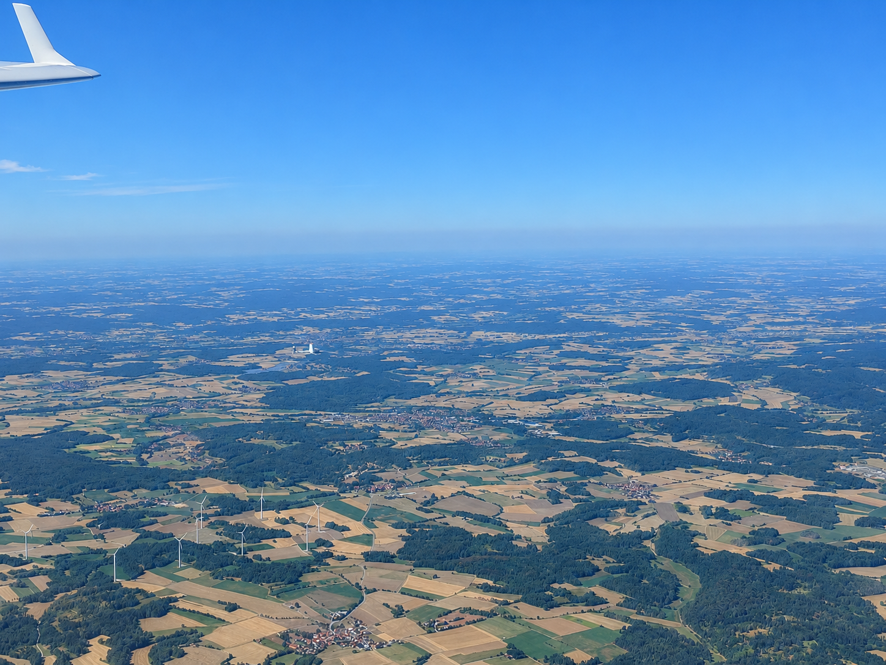
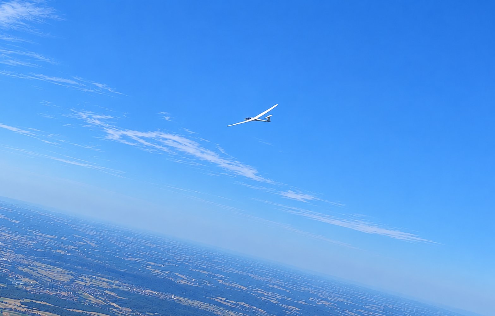
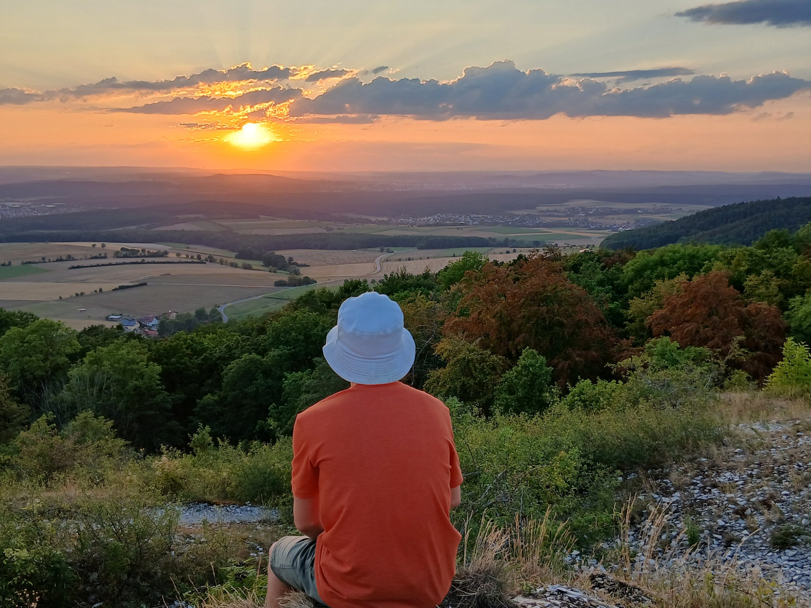

16.11.2026
Fluglager auf der Friesener Warte

Vom 1. bis zum 8. August waren 9 motivierte Flieger mit 4 Flugzeugen am Flugplatz Friesener Warte oberhalb von Nürnberg und konnten eine Woche lang bei besten Bedienungen fliegen. Abends wurde entweder gegrillt oder die örtlichen Gasthäuser geplündert. Da auch ein Fluglehrer mit dabei war, konnten auch die Flugschüler auf unserer DG den Streckenflug ausprobieren.

